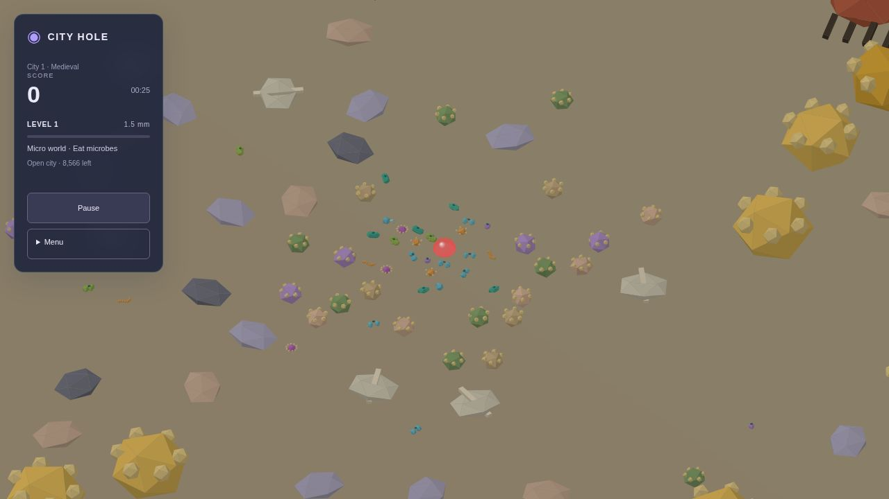
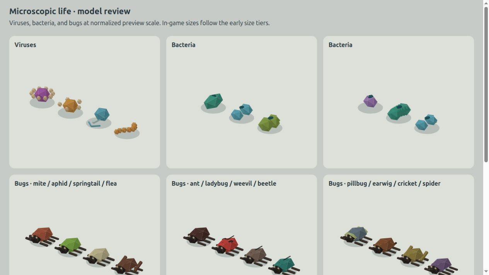

Translucent player, animated microorganisms and insects, vortex pickups, no zone gates, consistent L−20 tile cutoff.
Four 60 Hz trials: Medieval 241.7s; Industrial 232.0s; Modern 241.7s; Futuristic 245.4s. All completed; no runtime generation. See raw results.


Live animated review: model gallery.